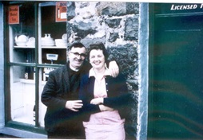

Siop Pen-y-groes
Tout au début, Elin Hughes était la propiètaire de ce magasin, suivi d’Evan Wynne, de Morfudd Owen et pendant bien des années, de Ceridwen Roberts. Siop Pen-y-groes était le fournisseur habituel de Nant Gwrtheyrn. Afin de descendre la pente raide jusqu’à Nant, Evan Wynne se servait d’un traineau tiré par un cheval. Suivant la fermeture du magasin en 1995, on a décidé, dans une réunion publique, de lancer une souscription locale pour acheter Siop Pen-y-groes. Alors en 1996, le magasin a rouvert ses portes.
Robin et Ceridwen Roberts
 La boutique d’Elin Hughes dans les premières années, qui a été dirigée plus tard par Evan Wyn et Morfudd Owen, Ceridwen Roberts et Carol Bonehil. Le magasin est devenu plus tard une propriété communautaire, Siop Pen-y-Groes.
La boutique d’Elin Hughes dans les premières années, qui a été dirigée plus tard par Evan Wyn et Morfudd Owen, Ceridwen Roberts et Carol Bonehil. Le magasin est devenu plus tard une propriété communautaire, Siop Pen-y-Groes.
 Evan Wynne transportait des marchandises à Nant Gwrtheyrn avec un traîneau, qui appartenait à William Thomas, Tŷ Canol Nant.
Evan Wynne transportait des marchandises à Nant Gwrtheyrn avec un traîneau, qui appartenait à William Thomas, Tŷ Canol Nant.